Unduh file ZIP ekstensi
GAS Intelligence versi 1.1.2. Ukurannya sekitar 1,3 MB dan hanya perlu diunduh sekali.
Langkah pemasangan di Chrome, Edge, atau Brave
Urutannya sama di ketiga browser. Perbedaannya hanya di alamat halaman ekstensi.
-
Simpan file ZIP
Setelah klik Unduh dari Drive, lalu tombol unduh di halaman Google Drive, file
GAS-Intelligence-Extension-v1.1.2.ziptersimpan di folder Downloads.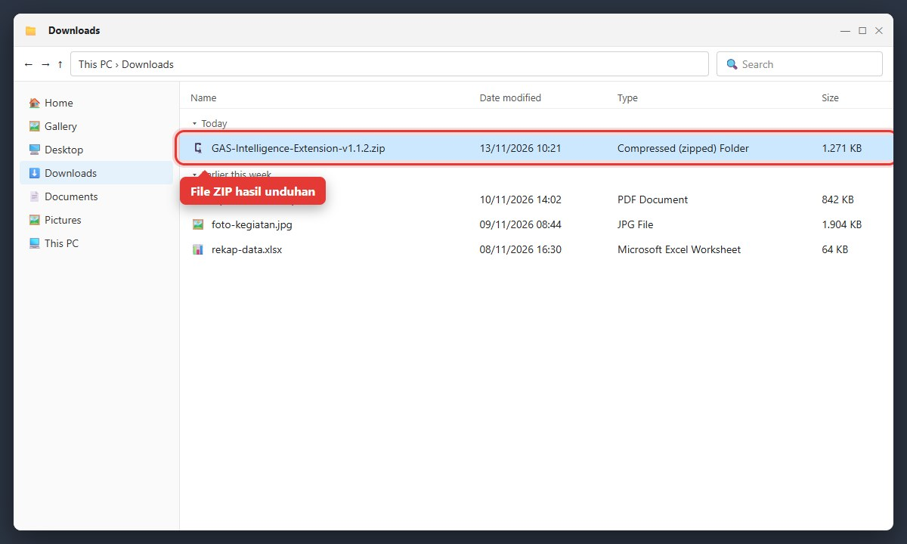
File ZIP di folder Downloads. -
Ekstrak ZIP ke folder tetap
Klik kanan file ZIP, pilih Extract All… (Windows) lalu Extract. Hasilnya adalah sebuah folder.
Penting: taruh folder hasil ekstrak di tempat yang tidak akan dihapus atau dipindah, misalnya
Documents\GAS-Intelligence. Jangan menjalankan ekstensi dari dalam ZIP. Ekstensi akan berhenti bekerja jika foldernya hilang.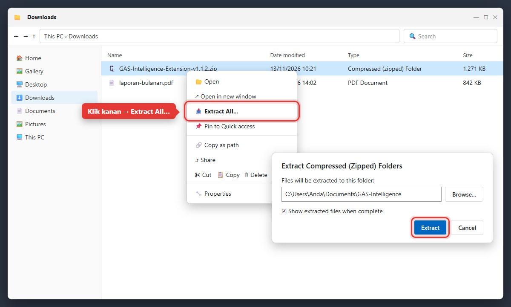
Klik kanan, lalu Extract All. -
Buka halaman ekstensi browser
Buka tab baru, salin alamat sesuai browser Anda, tempel di kolom alamat, lalu tekan Enter.
Chrome:
chrome://extensionsEdge:
edge://extensionsBrave:
brave://extensionsAlamat ini tidak bisa diklik dari website, jadi harus disalin lalu ditempel sendiri.
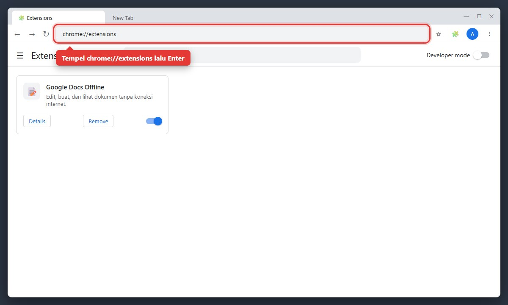
Halaman Extensions di browser. -
Aktifkan Developer mode
Nyalakan saklar Developer mode. Letaknya di pojok kanan atas (Chrome, Brave) atau kiri bawah (Edge).
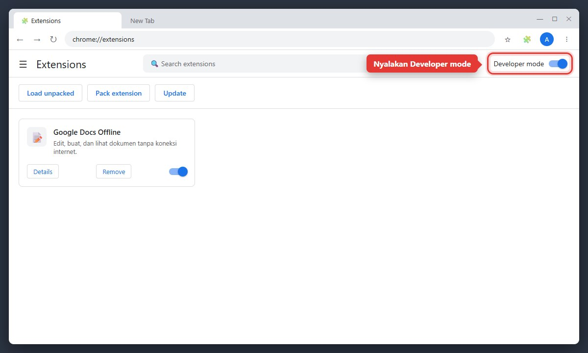
Saklar Developer mode harus menyala. -
Klik Load unpacked
Setelah Developer mode menyala, muncul tombol Load unpacked (di Edge juga bernama Muat tanpa paket). Klik tombol itu.
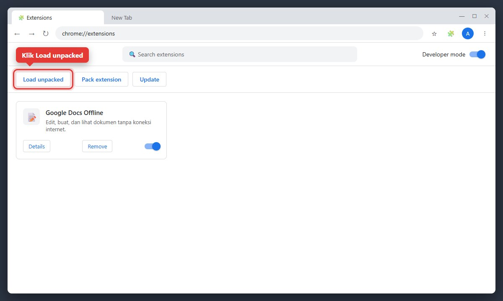
Tombol Load unpacked. -
Pilih folder hasil ekstrak
Pilih folder hasil ekstrak dari langkah 2, lalu klik Select Folder. Pilih folder yang di dalamnya langsung ada file
manifest.jsonserta foldersrc,icons, danvendor. Kadang ada folder di dalam folder, jadi masuklah satu tingkat lagi jikamanifest.jsonbelum terlihat.Jika berhasil, kartu GAS Project Extractor & Code Intelligence versi 1.1.2 muncul, dan halaman Settings ekstensi terbuka otomatis. Halaman itu boleh langsung ditutup karena tidak ada yang perlu diisi.
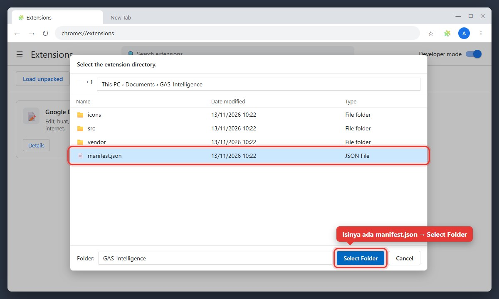
Folder yang dipilih harus berisi manifest.json. -
Sematkan ekstensi ke toolbar
Klik ikon puzzle di sebelah kolom alamat, lalu klik ikon pin di samping GAS Project Extractor agar tombolnya selalu terlihat.
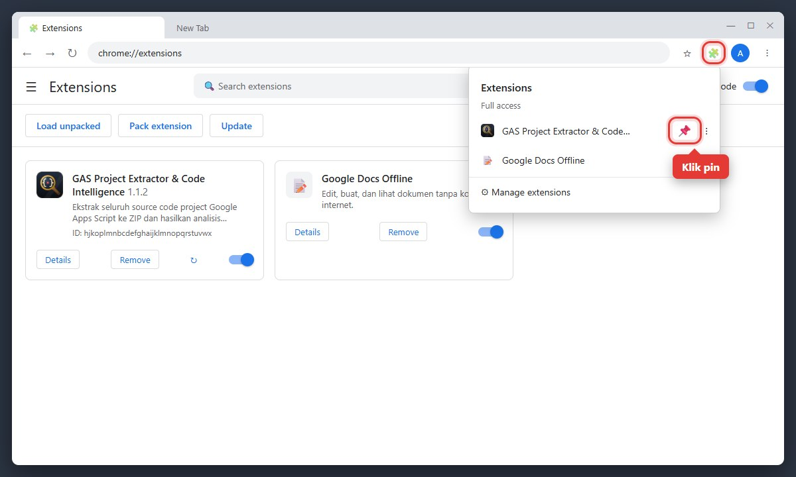
Ikon puzzle, lalu pin.
Backup & analisis project Apps Script
Tanpa login tambahan dan tanpa setup Google Cloud. Ekstensi hanya membaca kode, tidak pernah mengubah, menjalankan, atau men-deploy project.
-
Buka project di editor Apps Script
Buka script.google.com, lalu buka project yang ingin di-backup sampai editor kodenya tampil.
Agar
appsscript.jsonikut tersimpan: klik ikon roda gigi Project Settings di kiri, lalu centang Show "appsscript.json" manifest file in editor. Cukup sekali per project.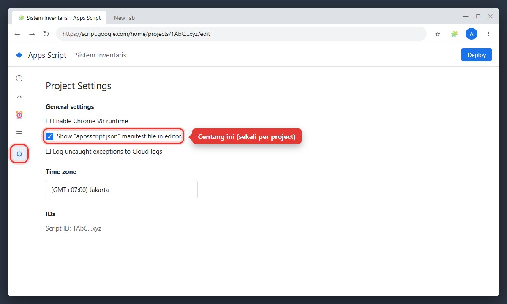
Editor Apps Script dengan daftar Files di kiri. -
Klik tombol
{ }di pojok kanan bawahTombol bulat { } muncul di pojok kanan bawah editor. Klik tombol itu (atau klik ikon ekstensi di toolbar) untuk membuka panel GAS PROJECT INTELLIGENCE.
Jika tombolnya belum muncul, muat ulang tab editor dengan F5.
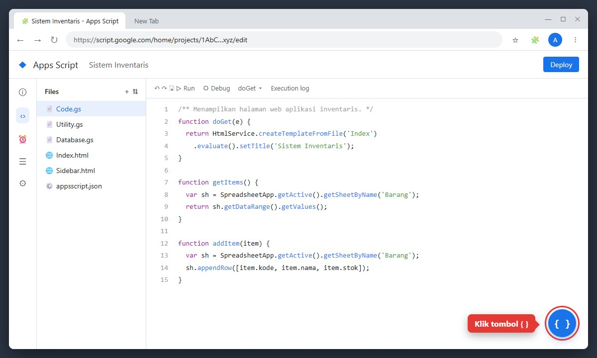
Tombol { } membuka panel ekstensi. -
Klik ⚡ Ekstrak Semua + Analisis → ZIP
Ekstensi akan membuka setiap file satu per satu dan membaca isinya. Progresnya tampil di panel: jumlah file, fungsi, dan dependensi yang ditemukan.
Selama proses berjalan, jangan klik apa pun di editor. Biarkan ekstensi berpindah file sendiri sampai muncul status Completed.
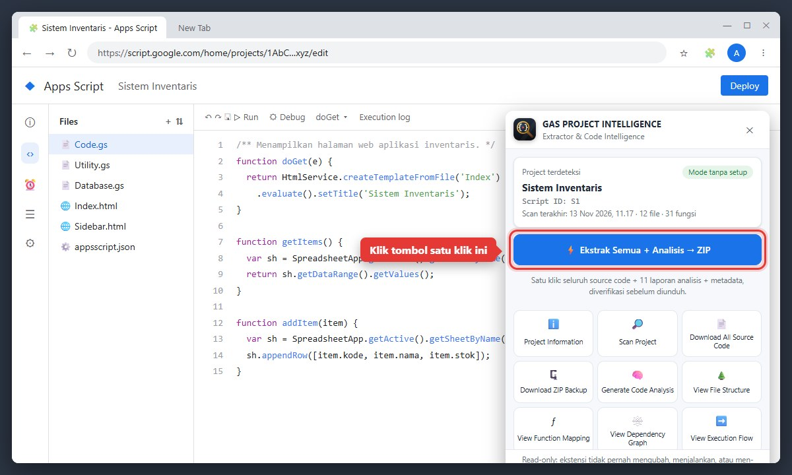
Satu klik: seluruh source code + 11 laporan analisis. -
Buka file ZIP hasil backup
File
GAS_NamaProject_BACKUP_tanggal.ziptersimpan di folder Downloads, setelah isinya dicek sama persis dengan kode aslinya. Isinya:SOURCE_CODE: semua file.gs,.html, danappsscript.jsonapa adanya.
ANALYSIS: 11 laporan Markdown (arsitektur, peta fungsi, dependensi, alur, database, API, keamanan).
PROJECT_METADATA: info project dan log ekstraksi.Mulailah membaca dari
EXECUTIVE_SUMMARY.md.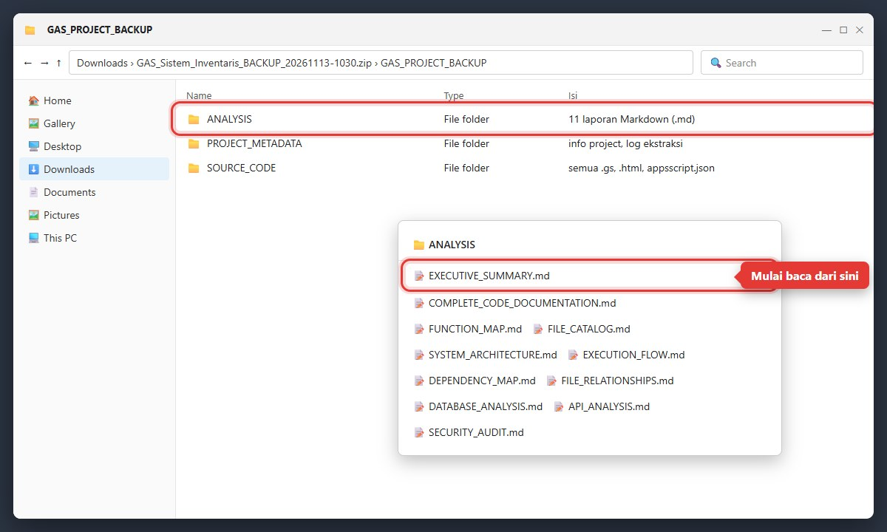
Tiga folder di dalam ZIP backup. -
Jelajahi lewat dashboard (opsional)
Di panel, menu View File Structure, View Function Mapping, View Dependency Graph, View Execution Flow, dan Security Analysis membuka dashboard dengan hasil scan terakhir. Klik nama fungsi untuk melihat siapa yang memanggilnya, apa yang dipanggilnya, dan dampaknya jika diubah.
Tanda [langsung] berarti terbukti dari kode, sedangkan [dugaan] berarti hasil perkiraan.
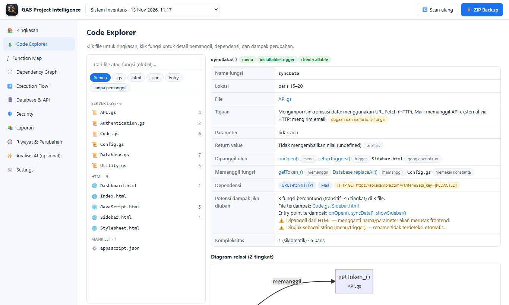
Dashboard Code Explorer.
Jika ada masalah
Klik pertanyaan untuk membuka jawabannya.
Muncul pesan error saat analisis
Source code tetap aman. Jika analisis gagal di tengah jalan, ekstensi otomatis mengunduh ZIP darurat berisi seluruh SOURCE_CODE plus file ANALYSIS_ERROR.json. Panel juga menyediakan tombol Unduh ulang ZIP source code.
Kirim file ANALYSIS_ERROR.json ke pengembang agar error-nya bisa diperbaiki.
Tombol { } tidak muncul di editor
- Pastikan alamatnya
script.google.com/…/edit(editor project, bukan halaman daftar project). - Muat ulang tab dengan F5.
- Cek di halaman ekstensi bahwa saklar GAS Project Extractor menyala.
appsscript.json tidak ada di ZIP
Aktifkan Show "appsscript.json" manifest file in editor di Project Settings (langkah pemakaian nomor 1), lalu ulangi backup.
Ada file yang ditandai GAGAL
File itu tidak terbaca utuh, jadi tidak disimpan setengah-setengah. Biasanya karena editor diklik saat proses berjalan. Ulangi tanpa menyentuh editor sampai selesai.
Cara memperbarui ke versi baru
Ganti isi folder ekstensi dengan versi baru (lokasi folder tetap sama), lalu klik ikon ↻ Reload pada kartu ekstensi di halaman ekstensi. Riwayat scan tetap tersimpan.